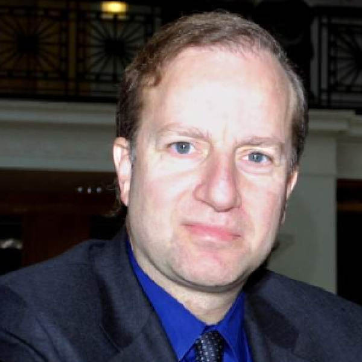

|

|
Post-Transcriptional Control of Gene Expression: RNA Dictates the Rules!
Cecília Arraiano, Instituto de Tecnologia Química e Biológica, Universidade Nova de Lisboa, Portugal
|
» Abstract (click to toggle view)
Many biological processes can not be fully understood without detailed knowledge of RNA metabolism. RNA does more than simply serve an intermediary function and many RNA molecules are the principal actors in largely unexplored networks of gene regulation. RNA is full of surprises and in 2006 two Nobel prizes were attributed in the field of RNA. Unknown classes of noncoding RNAs have been discovered. MicroRNAs (miRNA) and small interfering RNAs (siRNA) have been shown to bind and control their target mRNAs. Chemically synthesized siRNA are showing to be a ground-breaking tool for analysis of gene function and gene therapy.
RNA stability is very important for differential gene expression. RNAs differ in their susceptibility to degradation by ribonucleases, due in part to their different sequence and structure. Moreover, there are surveillance mechanisms that degrade aberrant RNAs. Mutants deficient in one or more ribonucleases have played a primordial role in the study of the decay processes. The rates of decay can be altered in response to stress and physiological signals. RNA metabolism shows greater similarities between prokaryotic and eukaryotic systems than was generally believed. For instance, in both systems poly(A) tails of mRNAs play major roles in the control of mRNA decay. It is important to study RNA metabolism in different systems, to allow universally conserved features to be recognized.
The maturation, turnover and quality control of RNA is performed by many different classes of ribonucleases. Ribonuclease II (RNase II) intervenes in all of these fundamental processes, degrading single-stranded RNA from its 3' end and releasing ribonucleoside 5'-monophosphates. This exoribonuclease can act independently or as a component of the exosome, an essential RNA-degrading multiprotein complex. RNase II-like enzymes are found in all three domains of life. RNase II is often essential for growth, can be developmentally regulated, and mutations in its gene have been linked with abnormal chloroplast biogenesis, mitotic control and cancer.
We have participated in the resolution of the structures of both the ligand-free and RNA-bound forms of Escherichia coli RNase II. The structural and biochemical analysis has helped explaining the activity of these enzymes. The 3D model proposed showed the dynamics of the RNase II-mediated RNA degradation and opened an exciting new chapter in the comprehension of RNA metabolism. We have constructed mutants of RNase II protein and RNase II-hybrid proteins with domains from other exoribonucleases. We have confirmed the role of specific aminoacids, we have identified the residue responsible for setting the end product, and we have constructed a “super-enzyme”. Computational analysis has given interesting data regarding the evolution of the RNase II family of enzymes. In particular we are focusing our studies in the enzymes that have been crucial in defining the properties of the exosome (namely the Rrp44 /Dis3 yeast and human homologues), in enzymes that we have already been studying (namely E. coli RNase R and Drosophila Tazman), and enzymes that can be important in pathogenesis (RNase II from Salmonella thyphimurium and Streptococcus pneumoniae). We have also constructed mutants to study the role of RNase II in the degradation of mRNAs and small noncoding RNAs. We also want to understand its role in the surveillance mechanisms that degrade aberrant RNAs for RNA quality control. The biological significance of the RNase II family of enzymes will be discussed. Cecília Arraiano is a Principal Investigator at Instituto de Tecnologia Química e Biológica, after having had appointments at the Universities of Maryland and Naples. She received her B.Sc. in Biology from the University of Lisbon and a PhD in Genetics from the University of Georgia. She was a Fulbright-Hays Scholar and was recently elected to serve as an EMBO member.
|
|
|
MicroRNAs and other small regulatory RNAs
David Bartel, Whitehead Institute / Howard Hughes Medical Institute / MIT, USA
|
» Abstract (click to toggle view)
We have been using molecular and computational approaches to find small regulatory
RNAs, identify the messages that they repress, and then investigate functions and
mechanisms of these regulatory interactions during development, oncogenesis, and other
biological processes. Much of our focus has been on microRNAs, which are small
endogenous RNAs that pair to sites in mRNAs, usually in mRNA 3'UTRs, to directed
posttranscriptional repression of these targets. Metazoan miRNAs dampen the expression
of many mRNA targets to optimize expression, reinforce cell identity, and sharpen
developmental transitions. Indeed, most human mRNAs are conserved targets of
microRNAs.
One of the major limitations in assigning miRNAs to their regulatory targets has been that
mRNA 3'UTRs often are not annotated or they are incorrectly annotated, with little
information on alternative UTR isoforms. To address this limitation, we have developed a
high-throughput method to specifically sequence the genomically templated 3' ends of
polyadenylated RNAs. Applying this method, called 3P-Seq, to C. elegans mRNAs
provided new or corrected annotations for most of the C. elegans 3'UTRs. This information
enabled a fresh look at miRNA targeting in nematodes, which revealed important
differences between target recognition in nematodes compared to that of flies and
vertebrates. Analysis of our 3P-Seq results also provided many insights into mRNA 3'-end
formation in nematodes and how it appears to have facilitated genome compaction. We
expect that 3P-Seq will also be useful for studies in other species. For example, in human
cells the ability to reliably identify alternative UTR isoforms will shed light on why
microRNAs (and other posttranscriptional processes) regulate mRNAs of certain genes in
some cell types but not in others, a phenomenon recently associated with cell proliferation
and oncogenic transformation.
David Bartel is an HHMI investigator and is also Professor of Biology at the Massachusetts Institute of Technology, Member of the Whitehead Institute, and Molecular Biologist at Massachusetts General Hospital, Boston. He received his B.A. in Biology from Goshen College, and a PhD in Virology from Harvard University. He is the recipient of the AAAS Newcomb Cleveland Prize, the Institut de France Grand Prix Scientifique de la Fondation Louis D. and the National Academy of Sciences Award in Molecular Biology.
|
|

|
Preventing the incidentalome and personalizing medicine through instrumentation of the healthcare enterprise
Isaac Kohane, Harvard Medical School, USA
|
» Abstract (click to toggle view)
The promise of genomic medicine includes personalizing diagnoses and therapies, if not to the level of the individual, then to a small population of individuals with shared pathophysiology. The availability of commodity-priced genome-scale assays has led to increased popular demand and expectation for the application of these assays to clinical care. Yet there are several structural impediments to the safe practice of genomic medicine, all of which fall within the domain of biomedical informatics. These include:
- the growth of the Incidentalome, the tsunami of false positives that inevitably result from application of massively parallel tests;
- the lack of systematic interpretations of genomic tests and evaluation of their performance;
- the absence of a mechanism to transfer the growing knowledge of genomics to the physician at the point of care.
Fortunately there are several developments in biomedical informatics that address these impediments. These include:
- the industrialization of measurement of phenotype, sample acquisition and genotype across large populations seen in the course of clinical care as exemplified by the i2b2 infrastructure (see www.i2b2.org);
- integration of knowledge from the bibliome into clinical care;
- including patients as collaborators in the research enterprise.
Isaac Kohane is the director of the Children's Hospital Informatics Program and is the Henderson Professor of Pediatrics and Health Sciences and Technology at Harvard Medical School (HMS). He is also co-director of the HMS Center for Biomedical Informatics and Director of the HMS Countway Library of Medicine. Dr. Kohane is a founder of the Center for Outcomes and Policy Research at the Dana-Farber Cancer Institute, founder and Associate Director for the Center for Genetic Epidemiology at Harvard Medical School. He is a Fellow of the American College of Medical Informatics and of the Society for Pediatric Research. Isaac Kohane received his MD from Boston University School of Medicine. He completed an internship, residency, and fellowship at Children's Hospital Boston.
|

|
Unraveling transcriptome complexities using single-molecule sequencing
Phil Kapranov, Helicos BioSciences Corporation, Cambridge, MA, USA
|
» Abstract (click to toggle view)
Discovery of multiple classes of non-coding RNAs (ncRNAs), both long (>200 nt) and short (<200nt), in many biological systems has transformed our understanding of genome complexity in recent years and suggest new paradigms of genome regulation. However, what fraction of all cellular RNA consists of ncRNAs and what fraction of the genome is utilized to produce them remain controversial. Far more than a bookkeeping issue, the degree to which this so called “dark matter transcription” is present has important implications regarding its biologic function, and the general architecture of genome regulation. In particular, elucidation of how ncRNAs regulate genome function will be compromised if they are dismissed as ‘transcriptional noise’.
Single-molecule sequencing (SMS) is an ideal tool to assess and accurately quantify transcriptome complexity of a cell. When applied to the human transcriptome, it revealed that the relative mass of non-coding RNAs as a proportion of all non-ribosomal non-mitochondrial human RNA can be greater than that of protein encoding transcripts and this complexity is lost in polyA-selected RNA. We further show the presence of a large number of very long abundantly-transcribed regions (e.g., 100’s of kb) in the genome’s intergenic space and show that these regions tend to associate with neoplastic transformation and their overlap with ncRNAs previously found in normal human embryonic tissues raises an interesting hypothesis as to function of the former in the early development and neoplastic transformation. Also, SMS could reveal a class of novel small RNAs antisense to 3’ ends of mRNAs indicative of a massive RNA-copying occurring in human cells. The presentation will provide the details of these results and discuss their implications for our understanding of the biology of cell.
Philipp Kapranov is a principal Genomics Scientist at Helicos BioSciences. He has a BSc. in Microbial Biotechnology from The Kiev Institute of Food Industry, and a PhD in Genetics from Michigan State University, during which he was a recipient of the Anton Lang Research Excellence Award. After his research training he joined Affymetrix, first as a post-doctoral fellow and then as a staff scientist.
|

|
Global analyses of signal transduction pathways
Norbert Perrimon, Harvard Medical School / Howard Hughes Medical Institute, USA
|
» Abstract (click to toggle view)
We are using high-throughput genome-wide RNA interference (RNAi) screens to assign phenotypic signatures, or phenoprints, to every gene in the fruit fly Drosophila melanogaster. These screens are based on a diverse set of cell-based assays, which rely on transcriptional analyses, protein modification, and high-content imaging to provide a wealth of phenotypic information. With these phenoprints, global correlations can be drawn to other large-scale datasets, such as transcriptional profiling and interactome data, in order to derive the network graphs critical for data mining. In addition, our group is taking a quantitative approach to elucidate the organization of signaling networks, using a combination of RNAi, gene expression profiling and Mass Spectrometry approaches.
Norbert Perrimon is an HHMI investigator, Professor of Genetics at Harvard Medical School and Associate Member of the Broad Institute of Harvard University and the Massachusetts Institute of Technology. He received is Maîtrise in Biochemistry from the University of Paris, and his PhD in Developmental Genetics from the University of Paris. He is a member of the American Academy of Arts and Sciences and the American Association for the Advancement of Science. He is a Lucille P. Markey Scholar in Biomedical Sciences, and a recipient of the George W. Beadle Medal for the Genetics Society of America.
|

|
Towards the dynamic interactome
Mona Singh, Princeton University, USA
|
» Abstract (click to toggle view)
Large-scale cellular networks have been determined for a wide range of organisms across the evolutionary spectrum. Computational analyses of these networks have proven to be an important means for uncovering insights into cellular organization and functioning. The next frontier in biological network analysis is the development of approaches for inferring the dynamics inherent within known networks. Indeed, proper cellular functioning requires the precise coordination of a large number of events, and dynamic molecular interactions play a central role in regulating the functioning of cells and organisms. Thus, identifying the temporal and contextual signals underlying proposed interactions is a crucial part of understanding cellular function. In this talk, I will highlight recent computational efforts attempting to characterize dynamics from large-scale biological networks, and suggest promising avenues for future work.
Mona Singh is an Associate Professor at Princeton University, with appointments in the Computer Science Department and the Lewis-Sigler Institute for Integrative Genomics. She has a B.A. in Computer Science from Harvard University, and a PhD in Computer Science from MIT. She did postdoctoral training at the Whitehead Institute for Biomedical Research.
|
|
|
|